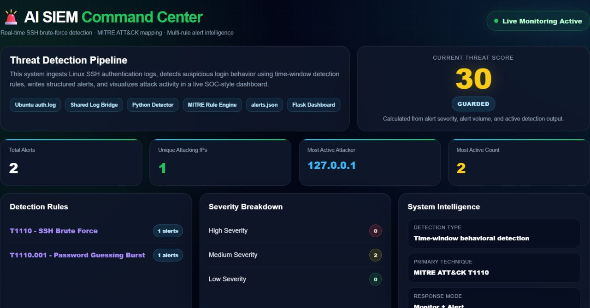
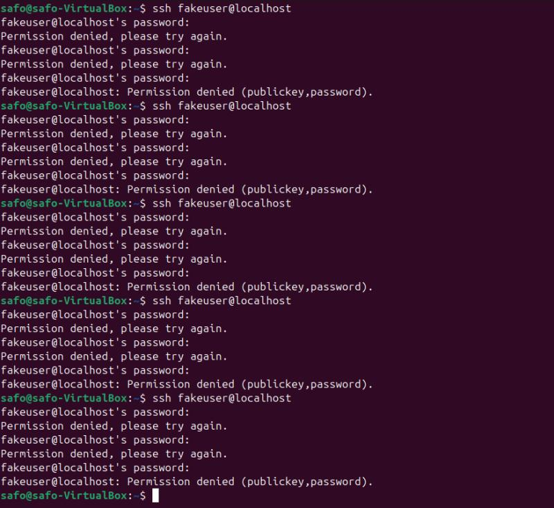
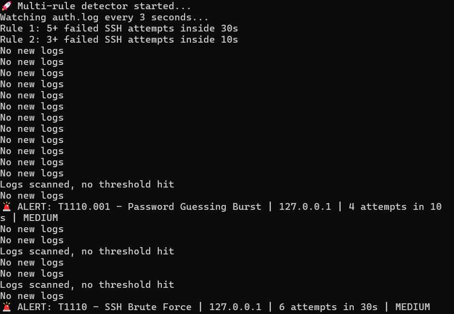
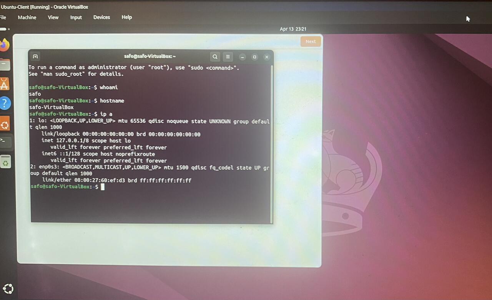

SSH Brute-Force Detection
Simulated repeated SSH login failures, captured authentication activity, detected password guessing patterns, and mapped behavior to MITRE ATT&CK T1110.
I build practical security labs, detect suspicious activity, document evidence, and turn technical risk into clean reports that clients and recruiters can understand.
Minimal, evidence-first projects built for cybersecurity credibility.
Simulated repeated SSH login failures, captured authentication activity, detected password guessing patterns, and mapped behavior to MITRE ATT&CK T1110.
Built a SOC-style dashboard that visualizes alert volume, attacking IPs, severity breakdown, and detection-rule output.
Reviewed websites for visible security risks, exposed content, weak trust signals, and client-facing remediation steps.
Replace these image paths with your uploaded files in GitHub: /assets/filename.png

Threat score, alert count, MITRE rule mapping, and system intelligence.

Repeated failed SSH logins against a local Ubuntu target.

Rules triggered for password guessing burst and SSH brute-force behavior.

System identity and network interface verification inside VirtualBox.
Clear security work for small businesses, recruiters, and technical teams.
Create simple detection rules, test them with lab activity, and explain the results.
Passive website reviews with clear findings, business impact, and remediation steps.
Professional writeups with evidence, severity, timeline, MITRE mapping, and recommendations.
Client feedback from audits and reports.
“I just finished reading my report. Really appreciate the work you put into this and how detailed everything was. The recommendations were actually useful and clear.”
“Safo Security delivered exactly the kind of audit every business owner hopes for but rarely gets. The findings were clear, straightforward, and valuable.”
“Safo Security was able to completely diagnose security risks of my website. Their process and professionalism is highly recommended.”
“Safo Security did a great job analyzing one of my client’s websites for potential harm. It was really helpful and I couldn’t recommend more.”